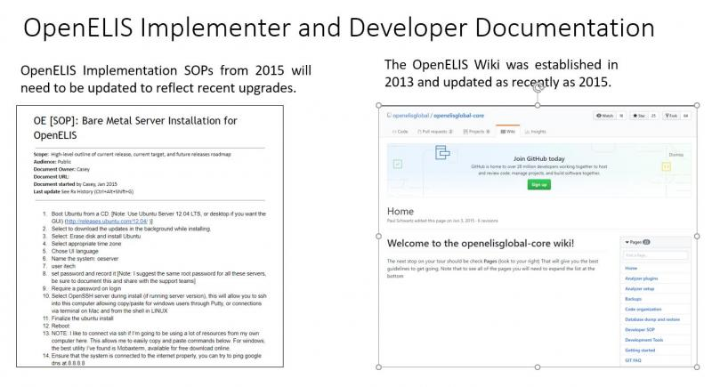
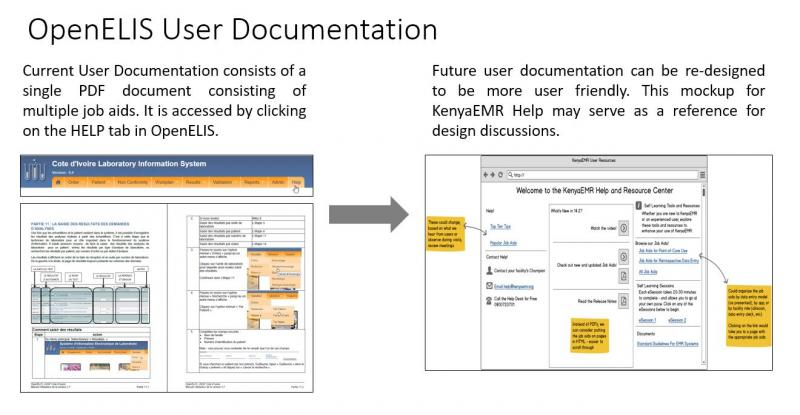
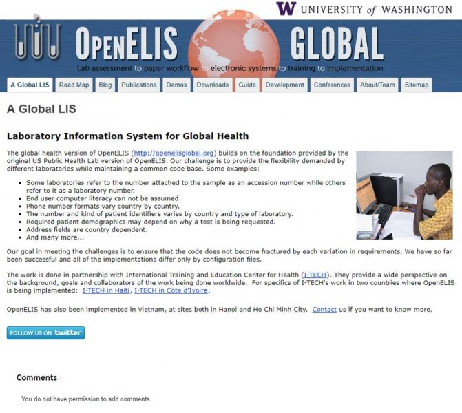
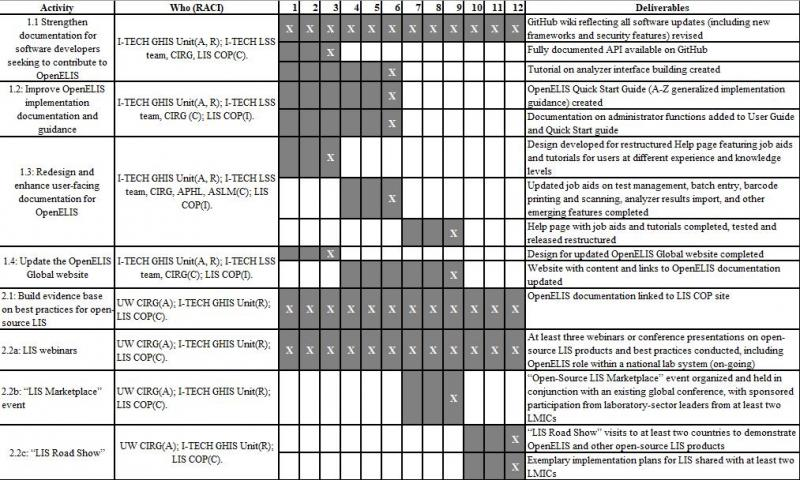

Executive Summary
Laboratory information systems (LIS) are a critical component of national health information systems architectures. Clinicians, lab professionals, national health sector leaders, and the donor community look to lab data to improve patient care and treatment, assist laboratories in achieving accreditation, support disease surveillance efforts, and inform outbreak responses. Effective national laboratory systems typically include clinical laboratories as well as reference laboratories at regional or national levels. Reference laboratories have distinct information management needs, such as the need to manage a large catalogue of test options, to handle batch processing of samples, to run test samples for quality control, and to receive orders and dispatch results to lower-level laboratories at high volume.
The primary open-source product which fills the distinct use cases and workflows of reference labs is OpenELIS (https://sites.google.com/site/openelisglobal/). OpenELIS was originally developed in several state public health laboratories within the US, and has since been adapted and deployed in Vietnam, Haiti, and Cote d’Ivoire at wide scale, and has also been integrated into and deployed with the leading OpenMRS distribution, Bahmni. Key features available within OpenELIS include: flexible test catalogue management; batch processing of bio-samples; barcode generation and printing capability; “plug and play” integration with automated analyzers covering a wide range of test types; integration with a data visualization dashboard to display indicators for national surveillance; generation of CSV file exports to facilitate flexible indicator reporting to a variety of stakeholders; and language localization in English and French.
The proposed project will significantly improve resources which enable health sector personnel to efficiently deploy, adopt, and use OpenELIS, advance awareness of the features and value proposition of the OpenELIS product within the laboratory sector in LMIC, and widen the community of stakeholders interested in maintaining and enhancing OpenELIS and other open-source LIS for long-term sustainability of system implementations and software products. Together the activities will contribute to improved availability of viable open-source LIS which support quality of laboratory practice in low and middle income countries (LMICs).
Consortium Team
The consortium team is led by the University of Washington (UW), including two groups which will come together to carry out this proposal: the International Training and Education Center for Health (I-TECH) (https://www.go2itech.org/) and the UW Clinical Informatics Research Group (CIRG) (http://cirg.washington.edu/). I-TECH is a Center within the UW Department of Global Health (DGH) that leads health systems strengthening initiatives in more than 20 countries. I-TECH has led OpenELIS development and implementation in Haiti and Cote d’Ivoire since 2009 and 2010 respectively. In Haiti and Cote d’Ivoire, I-TECH has supported implementation of OpenELIS in more than 75 national public health reference labs as well as in large-volume clinical laboratories. As a part of the Haiti project, I-TECH has established integration between OpenELIS and OpenMRS, and has established an OpenHIE-based interoperability layer, which is suitable for supporting data exchange between LIS and EMRs as well as between LIS and the DHIS2-based national aggregate data reporting system.
As of October 2018, I-TECH is supporting the launch of a unified Global Health Information Systems (GHIS) Unit, which will serve as a central hub within I-TECH and the UW DGH for health informatics expertise, under the leadership of faculty member Dr. Nancy Puttkammer. The GHIS Unit brings together experienced I-TECH staff from separate country teams with a range of expertise relevant for health informatics in global settings, including in requirements gathering and technical design, software development, implementation planning, technology project management, human capacity building and training, data analytics, and assessment and evaluation of digital health solutions. The GHIS Unit is set up as a distinct business unit with a flexible mechanism for contracting technical assistance services to serve digital health project needs for Principal Investigators (PIs) from across UW, or to serve clients outside of UW. This mechanism offers the potential to harness expertise from faculty, staff, and students from the UW’s Schools and Departments including Health Sciences, Computer Science and Engineering, Bioengineering, Information Sciences, Business and others.
I-TECH also brings to the project the expertise in laboratory systems in LMIC, through ourLaboratory Systems Strengthening (LSS) Team. Led by Dr. Lucy Perrone, a public health laboratory advisor specializing in infectious disease diagnosis, surveillance and response, and laboratory capacity building in LMICs, the team leverages partnerships within UW and with external collaborators globally on supporting laboratory capacity building. The team’s mission is to improve laboratory operations for optimal patient care and treatment, disease surveillance and response, and biosecurity. The team has conducted training and mentoring in laboratory leadership and management, supported policy development for laboratories, and worked with reference and clinical laboratories on advancement toward accreditation. As part of reinforcing good laboratory practice, the team has also supported customization and implementation of LIS for improved information management within the laboratory. The LSS team is available to contribute expertise in the fit between LIS and laboratory workflows and systems to the proposed project.
The UW team also includes CIRG, one of the premier HIS and LIS community building and software development teams, under leadership from Jan Flowers. CIRG designs, develops, builds, and operates information systems that securely manage health information for projects in clinical, public, and global health settings. CIRG has led numerous lab informatics projects involving OpenELIS and BLIS, founded OpenLabConnect, developed LIS interoperability projects, and has worked in Haiti, Cote d’Ivoire, Kenya, Mozambique, Cameroon, Namibia, and Vietnam. Ms. Flowers serves on the board of directors for both OpenELIS Foundation and OpenMRS, and is one of the founders and lead for the LIS COP, which was funded under Digital Square Notice B to develop and share common standards and best practices amongst the open-source LIS community.
Resumes for key staff from the UW team including the GHIS Unit and LSS team at I-TECH, and CIRG are included as attachments to this proposal.
Project Description
Problem Statement
Complete and accessible documentation is a key component to the success of any digital product and open-source community. Well written and easily accessible documentation can make selecting, using, and/or contributing to an open-source product a positive experience for a Ministry of Health, a software developer, an implementer, and a user. Although OpenELIS is a robust LIS, knowledge of the product and its potential value within the community of global health informatics practitioners is lagging. Limitedcore product investment results in gaps in documentation and stewardship to build a strong community around this open-source product. Basic documentation exists in some areas for OpenELIS, including a variety of information for developers on the OpenELIS Github Wiki (https://github.com/openelisglobal/openelisglobal-core). However, a more robust set of documentation could improve engagement and increase implementation success by all those roles involved in OpenELIS, and help strengthen a community that shares and builds knowledge among experts, stakeholders, developers, implementers, and users.
Demonstrated Need and Potential for Health Impact
LIS are a critical component of national health information systems architectures. Clinicians, laboratory professionals, national health sector leaders, and the donor community look to laboratory data to improve patient care and treatment, assist laboratories in achieving accreditation, and support disease surveillance efforts and inform outbreak responses. First, LIS play an integral role in laboratory quality management (ISO 15189) by improving organization and management of bio-samples and testing queues, by reducing transcription errors in laboratory results, and by reducing turnaround time for diagnostic test results. Second, LIS can facilitate a critical link between the laboratory and clinical services, so that patients can be appropriately diagnosed and managed in light of accurate and timely laboratory test results. Finally, LIS can contribute to disease surveillance by improving the availability of laboratory data at regional and national levels. As low and middle income countries progress in development of coordinated eHealth investments, LIS can be leveraged to integrate with other clinical information systems and with disease surveillance and reporting systems.
Presently, OpenELIS is a leading open-source product with particular value for use in high-volume reference laboratories. Effective national laboratory systems typically include clinical laboratories as well as reference laboratories at regional or national levels. Reference laboratories have distinct information management needs, such as the need to manage a large catalogue of test options, to handle batch processing of samples, to run test samples for quality control, and to receive orders and dispatch results to lower-level laboratories at high volume.
There are several existing open-source LIS products focused on smaller clinical laboratories, such as Basic Laboratory Information System (BLIS) and Senaite Labs (formerly Bika Labs). These systems address different use cases than OpenELIS and are optimized for the workflows of basic clinical labs operating within clinics and smaller hospitals, where a limited array of laboratory test types and a limited volume of tests are run. These systems can play complementary roles to OpenELIS within national laboratory networks.
In contrast, OpenELIS fills the distinct use cases and workflows of reference labs. OpenELIS features such as batch processing, barcode generation, and analyzer integration provide laboratories processing high sample volumes with a means of reducing turnaround time.
The value of OpenELIS in LMICs is demonstrated by the persistent use of the product in more than 20 high-volume regional laboratories in Haiti more than 18 months after withdrawal of external donor funding. It is also illustrated in Cote d’Ivoire, where the Ministry of Health has shown its commitment to the OpenELIS product by expanding its use in regional labs over an alternative open-source LIS.
The proposed project will significantly improve resources which enable health sector personnel to efficiently deploy, adopt, and use OpenELIS, advance awareness of the features and value proposition of the OpenELIS product within the laboratory sector in LMIC, and widen the community of stakeholders interested in maintaining and enhancing OpenELIS and other open-source LIS for long-term sustainability of system implementations and software products. Together the activities will contribute to improved availability of viable open-source LIS which support quality of laboratory practice in low and middle income countries (LMICs).
Technical Approach
This proposal seeks to a) improve and expand OpenELIS documentation as an open-source product; and b) raise visibility of OpenELIS within the landscape of open-source LIS through engagement with the LIS COP. Documentation and visibility will be expanded in such a way as to reflect the unique niche for OpenELIS as serving high-volume laboratories, within the context of a national laboratory network which includes multiple levels (from basic clinical labs to regional and national reference labs).
By building awareness and interest in OpenELIS as well as the broader open-source community, we expect to enhance the user base of the products and widen the community of developers and contributors with a stake in maintaining the OpenELIS product and its documentation. Situating the work within I-TECH’s GHIS Unit offers a model to sustain the functions of documentation, community management, and knowledge sharing over the medium to long term. As the user base for OpenELIS widens, the GHIS Unit can offer fee-based technical assistance in small to large units of service to organizations adopting and using OpenELIS, thereby generating revenue which can contribute to maintenance of the product, development and curation of resources, and stewardship of OpenELIS within the broader open-source LIS community. This is the type of model which University of Oslo and other organizations have successfully used to build a sustainable community related to DHIS2.
Project Description
Workstream 1: Improve OpenELIS Global Documentation
Considering that developers, implementers, and end users seek different information for different purposes, documentation for a software product such as OpenELIS must be created and maintained on several different levels. Additionally, OpenELIS is used in both Anglophone and Francophone countries, and so documentation must be maintained in both English and French, and created in such a way as to be easily translated into further languages as needed. Much of the existing documentation for OpenELIS was last updated in 2013-15, is available primarily in French, and does not reflect the current strengths of the product. In this activity area, resources for all three types of contributors (developers, implementers, and end users) will be expanded and redesigned to make gaining knowledge about and contributing to any facet of OpenELIS a positive experience.
With this documentation-focused workstream, we will pursue a documentation process which is highly relevant to the broader community of OpenELIS stakeholders and builds on best documentation practices and tools used by other open source products, such as OpenLMIS and OpenMRS. We seek to have stakeholders inform what should be documented, how documentation should be organized, and how it should look and feel. Such stakeholder engagement in the documentation process has the potential to build interest and engagement in the OpenELIS community and broader open-source LIS COP (see Workstream 2, below). Documentation will only be helpful if it is actually used.Carefully planned and packaged documentation has the potential to generate wider interest and participation in OpenELIS development, implementation, and use. The UW OpenELIS team will ensure that key documentation for implementers and end users is available in English and French.
Activity 1.1: Strengthen documentation for software developers seeking to contribute to OpenELIS. Figure 1 demonstrates the type of documentation for software developers and implementers which can improved. Updates to this documentation will include:
- Orientation to the OpenELIS code base and database model;
- Tutorial on setting up the OpenELIS development environment;
- Repository of requirements and specification documents for existing features;
- Documentation updates on all aspects of the technology overhaul currently underway to replace the Java framework, and to replace all end of life components as well as other security changes;
- Tutorials on creating new analyzer plugins to the level that analyzer interfaces could be built by developers who are previously unfamiliar with OpenELIS;
- Fully documented API available to help new parts of the health information ecosystem to easily interface with OpenELIS;
- Links to existing tutorials on development processes (ie: requirements gathering, user-centered design, testing) and laboratory services.
Activity 1.2: Improve OpenELIS implementation documentation and guidance.With the move from tailored forks of OpenELIS for each laboratory toward a unified software which is highly configurable, there is a need to guide implementers on the ways that OpenELIS can support varied and diverse lab workflows. Currently, it is difficult to understand the implications of each option and how they work together without prior experience configuring the system. Figure 1 shows an example of standard operating procedure (SOP) for implementers, which would be updated and augmented. Documentation of this system would unlock its potential for new implementers trying to get started. Specific improvements to implementer documentation include:
- Building a repository for current SOPs for OpenELIS installation and administration;
- Providing a comprehensive “Quick Start” guide for implementers, covering everything from procurement guidance to how to install the analyzer plugins;
- Setting up a file section to host existing analyzer plugins, installers and other software needed for implementation, as a companion to the installer to setup the software;
- Creating an interactive mechanism for implementers to share feedback and contribute new documentation and analyzer plugins.
Figure 1: Updated Documentation for OpenELIS Developers and Implementers Is Needed

Activity 1.3: Redesign and enhance user-facing documentation for OpenELIS. I-TECH intends to revolutionize the way that OpenELIS users obtain help based on their context-specific needs. Currently, instructions on using OpenELIS are contained in a single user manual that users can find tedious and time-consuming to navigate. Some users, particularly new ones, appreciate having access to a broad array of materials that they can browse and learn along the way. Other users, especially those who are more experienced and familiar with a specific digital product such as OpenELIS, will want to quickly locate and use a specific resource in order to complete a data entry or reporting task. Figure 2 illustrates the existing user manual and the direction for the possible design of indexed, context-specific user documentation and help resources. Specific activities will include:
- Enhancing the help menu to be integrated into the application and to be context-specific to the page a user is viewing. This work will be done as a model for others to continue to contribute to with additional contextual help information and integrations;
- Converting the existing User Manual into a comprehensive, up-to-date library of job aids and written tutorials on all current functionality (including newer functionality, such as test management, barcode scanning, batch entry, and analyzer results import);
- Providing users with access to a “Top 10” list of the most frequently accessed job aids.
- Offering user-facing resources with a cohesive landing pad with a consistent look and feel, organized in a manner which reflects how end users tend to learn to navigate the system.
Figure 2: Updated Documentation for OpenELIS End Users Is Needed

Activity 1.4: Update the OpenELIS Global website. The OpenELIS public-facing website has lagged far behind the rest of the project, with many sections last updated in 2013-14, and is in dire need of an update (see Figure 3). As part of this activity, we will update the look and feel as well as the content of the website to reflect the distinct interests of the core audiences of software developers, implementers and end users. We will make sure that the updated website links to all of the improved documentation and has a navigation structure which is appropriate for each type of audience. We will also work to link the OpenELIS Global website to the LIS COP’s website and pool of resources. We will work with the COP to ensure that all documentation is complete, relevant and easily accessible and that implementation advice follows best practices. The UW OpenELIS team will work with the eDGH Center within the UW Department of Global Health (https://edgh.washington.edu/) for web development.
Figure 3: Updates to the OpenELIS Website Are Needed

Workstream 2: Community Building for OpenELIS and Other Open-Source LIS
In LMICs, where investments in eHealth are often supported by central resources, there is a tendency to look to a single LIS to meet all of the information needs in the laboratory sector. However, this perspective neglects the distinct needs of laboratories at different levels of the health system. Unless an ecosystem perspective is considered when LIS are selected and implemented, laboratories will continue to struggle with key gaps and mismatches in the tools they use for information management. In conjunction with the LIS COP, we seek to raise the visibility of open-source LIS products in such a way that highlights the complementary nature of these products. The goal of this Workstream is to broaden the user base of open-source LIS products, including OpenELIS.
In this area, we propose a series of awareness raising conversations, events, and discussions designed to meet the following objectives:
- Strategically position open source LIS products to address laboratory information needs according to a country’s laboratory network context;
- Expand knowledge about open-source LIS products and their integration into laboratory networks within the global community
Activity 2.1: Build evidence base on best practices for open-source LIS. Through robust participation in the LIS COP, such as via joining regular conference calls, the UW OpenELIS team will contribute to the evidence base and set of resources created through the LIS COP. In conjunction with core members of the LIS COP, the UW OpenELIS team will facilitate and participate in a series of discussions via community calls that leads to common, shared documentation across LIS products. These discussions will reflect best practices in: LIS product design, alignment of LIS products to various laboratory workflows, management of open-source product development, implementation of open-source LIS within various lab settings, and training and capacity building for laboratory and IT personnel who maintain and use LIS. Specific actions will include:
- Invite I-TECH’s Laboratory System Strengthening (LSS) team and other laboratory experts (Association of Public Health Laboratories / APHL, African Society for Laboratory Medicine / ASLM, and others) to provide insight into laboratory processes, such as quality assurance monitoring, proficiency testing, and accreditation requirements.
- Document user stories and use cases in a common manner useful for OpenELIS and other open-source LIS products.
- Identify LIS COP best practices for documentation and artifacts from the LIS software development and implementation process which have common relevance for the open-source LIS community.
- Participate in drafting, review, and finalization of shared documents and resources contributing to the LIS COP.
The output of these activities will be coordinated with LIS COP contributors, resulting in effective online documentation vetted and endorsed by the broader open-source LIS COP. These resources will help laboratory and health sector decision-makers compare products and learn from others about successful practices in LIS implementation.
Activity 2.2: LIS “Road Show”. The concept of a LIS “Road Show” will be planned in conjunction with the LIS COP. The aim will be to raise awareness of integrating open-source LIS products into the laboratory and eHealth system, including the possible role of OpenELIS in the context of a national laboratory network. The Road Show will involve building knowledge of LIS technologies, features, and implementation approaches, including OpenELIS. The LIS Road Show will include several activities playing out over the course of the 12-month project. These include:
- Presentations and discussions in public forums, such as monthly webinars and “show and tells” with other members of the LIS COP. The UW OpenELIS team will help organize and will participate in at least 3 such events.
- An “Open-Source LIS Marketplace” event to be held in conjunction with the annual Global Digital Health Forum Conference or the annual OpenHIE Implementers meeting. The UW team will plan, organize, and market the event. To facilitate participation of laboratory-sector leaders from at least two LMICs, the UW team will sponsor at least two attendees, based upon an open application process for the sponsored slots. This event will be participatory and involve the opportunity to interact with demonstration versions of the various LIS software products.
- A traveling “LIS Road Show” event showcasing OpenELIS and other open-source software products. A team including at least one member of the UW OpenELIS team will complete visits to at least two resource-limited countries (such as Angola, Democratic Republic of Congo, Malawi, Cameroon, Mozambique, Kenya, Zimbabwe) to demonstrate the LIS COP products and to evaluate fit for their national laboratory system information management needs. As an output of the visits, we will create sample implementation plans for the appropriate LIS product, outlining the considerations for each particular setting should they choose to deploy one of the LIS products.
Use of Digital Health Technologies
Across the two workstreams, the UW team will collaborate with the LIS COP. Technologies which will be used during the proposed work include: OpenELIS Global v8.4 (https://github.com/openelisglobal/openelisglobal-core), the OpenELIS Global website (https://sites.google.com/site/openelisglobal/), and other LIS products such as BLIS, Bika, and Senaite.
OpenELIS is a standards-based open source laboratory information system that was initially developed by state public health laboratories in Iowa and Minnesota to support standard laboratory business processes as defined by the Association of Public Health Laboratories (APHL). It was forked and adapted into OpenELIS Global in 2009 by I-TECH and CIRG at UW to support both the basic and advanced clinical laboratory workflows in low-and-middle income countries. Since then, it has been continuously improved upon by multiple organizations to meet both a broader set of LMIC laboratory use cases and needs, and adapted by implementers for specific local and regional context. It has been implemented in Haiti, Cote d’Ivoire, Vietnam, Kenya as part of the national eHealth architectures, and is integrated as part of the core offering of the Bahmni HMIS distribution, used across multiple countries. In recent years, I-TECH has led software development and implementation of the global fork of OpenELIS, now in version 8.3. OpenELIS is built on a platform using Java, PostgreSQL, Tomcat, Struts, and Ubuntu 16, and I-TECH plans to update the core product by moving from Struts to Spring (https://spring.io) in 2018-19 in order to ensure compliance with data security frameworks required in US government-supported laboratories.
OpenHIE LIS Community of Practice (LIS COP) is a new open source sub-community of practice under OpenHIE that serves to coordinate efforts on several widely-used mature open source LIS products - OpenELIS Global, BLIS, Senaite (formerly Bika) an open source independent lab instrument interface software called OpenLabConnect, and the integration of these technologies into the broader facility-level and upper-level HIS ecosystem. Created in 2013, the OpenHIE collaborative has defined a comprehensive design pattern for the national eHealth architecture in low-and-middle income countries. The collaborative offers example reference applications, and health information standards to serve as the component or external system functions, with published implementation guides, defined standards, and other resources available.
The Basic Laboratory Information System (BLIS) was developed in 2009 by Georgia Tech C4G with support from the U.S. Centers for Disease Control (CDC). Using the initial implementation in Cameroon as the setting of required functionality, the system focused on “keeping it simple” for facility-based laboratories in LMIC. Since then, multiple organizations have forked the codebase to improve upon those functions, modernize the technologies, and adapt for specific local context needs. Widely used under CDC funded programs, BLIS is a mature product that maintains its mission to be simplistic for its user base, while providing some more advanced functions behind the scenes to automate the workflow processes. BLIS will be part of the LIS “Road Show.”
SENAITE (formally Bika LIMS) was built from the ground up as a modern web application server in 2004 and was released publicly as open source software in 2005. Since then the system has added support for microbiology and branches for health care, water quality management and inter-laboratory proficiency testing. It is a derivative work of Bika LIMS software, built on top of Plone CMS with Python as its main programming language. It is developed under the paradigm of continuous integration (CI) and continuous delivery (CD) ensuring that can be reliably released at any time. There have been many architectural changes with respect to its predecessor Bika LIMS; SENAITE is developed as a system of independent add-ons. This makes the application much easier to maintain and to contribute to. Now the system focuses on high performance and stability, interoperability (it ships with an integrated JSON API), and ease of use through an intuitive user interface (UI) and –experience (UX). Today, SENAITE is sustained by a collective of users, developers and sponsors to keep to professional standards and away from proprietary pricing models. SENAITE will be part of the LIS “Road Show.”
Workplan and Schedule
The project is planned for a 12 month period. The workplan below lists tasks for each workstream and activity, and identifies who will be responsible (R), accountable (A), consulted (C), or informed (I). The workplan also shows the due dates for each deliverable as noted with “X”.

Project Deliverables
Documentation for developers:
- Revised GitHub wiki with updates to support the new frameworks and security features
- Fully documented API available on GitHub
- Tutorial on analyzer interface building
Documentation for implementers:
- OpenELIS Quick Start Guide (A-Z generalized implementation guidance)
- Documentation on administrator functions added to User Guide and Quick Start guide
Documentation for end users:
- Restructured Help page featuring job aids and tutorials for users at different experience and knowledge levels
- Updated job aids on test management, batch entry, barcode printing and scanning, analyzer results import, and other emerging features
OpenELIS Global website:
- Complete design for updated OpenELIS Global website
- Updated content and links to OpenELIS documentation
Community building:
- At least three webinars or conference presentations on open-source LIS products and best practices, including OpenELIS role within a national lab system
- “Open-Source LIS Marketplace” event organized and held in conjunction with an existing global conference, with sponsored participation from laboratory-sector leaders from at least two LMICs
- “LIS Road Show” visits to at least two countries to demonstrate OpenELIS and other open-source LIS products
- Exemplary implementation plans for LIS in at least two LMICs
- Links to all documentation hosted within LIS COP
Digital Health Atlas
OpenELIS is registered as a project within the Digital Health Atlas.
Overview Summary
The requested investment from Digital Square will fund stewardship of, and curation and documentation for the OpenELIS community, and participation of OpenELIS within the LIS COP, to enhance the availability of viable open-source LIS which support quality of laboratory practice in LMICs. This work includes an updated OpenELIS website to effectively communicate the features and value proposition of this software product, and documentation for developers, implementers and end users to facilitate their use of OpenELIS.
Community Feedback
The UW OpenELIS team seeks to engage in a regular manner with the LIS COP, funded under the Digital Square Notice B, and project deliverables will be highly dependent upon community input and feedback channeled through this forum.
Other key stakeholders with which we will engage include laboratory-sector representatives from I-TECH’s LSS team, the Association of Public Health Laboratories (APHL), and the African Society of Laboratory Medicine (ASLM), as well as existing developers (e.g. Bahmni Coalition), implementers, and users of OpenELIS. We will seek community feedback so that our documentation is highly relevant to the broader community of OpenELIS stakeholders, including developers, implementers and end users. Community engagement and feedback will be critical to building interest in the OpenELIS community and broader open-source LIS COP and to achieving the goal of an expanded user base for OpenELIS and other open-source LIS products in LMIC.
As laboratory systems are critical components to a country’s national health, there are many other groups within the global goods sector that we anticipate engaging with to work through the guidance around interoperability aspects between these systems. Interactions will be mostly through the LIS COP, and can be anticipated to include:
- OpenMRS - interactions of patient identification, test orders, and test results;
- DHIS2 - interactions of sending aggregate lab data for program monitoring;
- Bahmni - LIS is a core component of Bahmni, and has sought the support of an LIS community to support that component within its system;
- OCL - terminology to be utilized across the HIS systems, including LIS;
- OpenLMIS - we would seek interactions to be developed for logistics and stock management of laboratory inventory within LIS workflows.
Beyond these direct and sought out interactions, the consortium will identify opportunities for presentation and publication of knowledge in informatics forums, participation in open-source health systems discussion boards, and will broadly disseminate knowledge about the experience and knowledge gained in this project.
User Stories
Workstream 1 User Stories
User Story 1.1a
As a software developer, I want to be able to read the documentation regarding the current code so that I can understand and make decisions for how to adapt or expand the code base.
User Story 1.1b
As a software developer, I want quick guidance at hand for setting up the OpenELIS development environment so I can get started in my development tasks as quickly and easily as possible.
User Story 1.1c
As a software developer, I want to have help on how to do specific things within OpenELIS so that I can know how to adapt the OpenELIS code base or modules to the requirements of the implementation I am working on.
User Story 1.1d
As a software developer, I want to access the previous requirements documents of the system features so that I can better understand the decisions that were made for how to code those features and how to interact with or modify that code as needed.
User Story 1.2a
As a systems implementer, I want to have guidance and instructions on how to implement the OpenELIS system into the different levels of laboratories so that I can be sure to follow best practices, ensuring a successful and sustainable implementation.
User Story 1.2b
As a systems implementer, I want to use existing SOPs for setting up the procedures around my implementation so I don’t have to build everything from scratch.
User Story 1.2c
As a systems implementer, I want to share my experiences, lessons learned, and implementation tools with other implementers to compare ideas and build upon best practices for OpenELIS implementation.
Conditions of Satisfaction:
- Make sure contributors have a way to collaborate and contribute both synchronously and asynchronously
- Make sure that contributors have a clear process for making contributions and how their contributions are vetted and accepted and acknowledged
User Story 1.3a
As a system user, I want to quickly find relevant help for the specific issues I’m experiencing without disrupting my workflow so that I can get back to completing my tasks at hand.
User Story 1.4a
As a stakeholder in an OpenELIS implementation, I want to be able to easily find and access information about the OpenELIS system and others’ experiences with it, and understand how to utilize that content for my context, so that I can make informed decisions about my work related to OpenELIS.
Workstream 2 User Stories
User Story 2.1a
As a member of the OpenHIE LIS COP, I want to learn what other LIS teams and communities are doing so that I can leverage the good work and lessons learned in the community we are forming and the products we are making.
Conditions of Satisfaction:
- Make sure there is a shared space both synchronously and asynchronously for members to share and collaborate on their experiences and knowledge
- Make sure share documentation and tooling is free and open for members and consumers to use and modify
User Story 2.1b
As a consumer of the OpenHIE LIS COP products and information, I want to be able to know that the community documentation and guidelines are vetted by laboratory experts so that I can feel comfortable using it in my system selection, implementation, and use.
User Story 2.2a
As a stakeholder in an LIS TWG, I want to be able to compare and contrast the various open source LIS products available to my Ministry of Health for implementation, so that I can decide what is best suited for my country’s context and the different levels of laboratories that will be involved in using LIS.
Conditions of Satisfaction:
- Make sure comparison data is available as a one-stop shop rather than having to figure out how to curate the appropriate information across sources
- Make sure product information makes it easy to identify which use cases those products best serve
Self-Assessment on the Global Goods Maturity Model
A self-assessment of the OpenELIS software product is included as an Appendix.
Tags
Laboratory information system; LIS; OpenELIS; Community of Practice